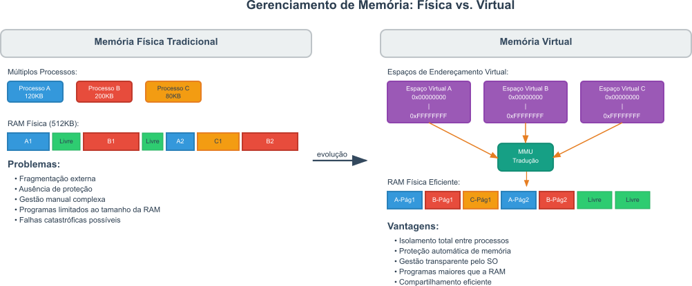
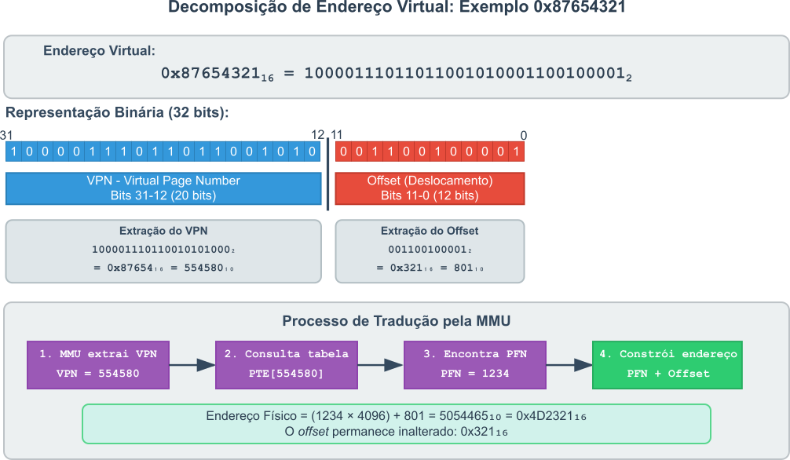
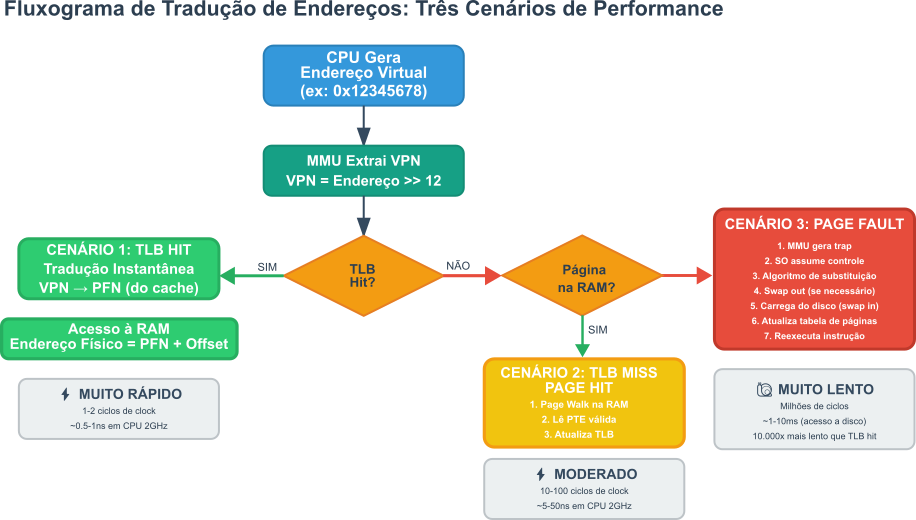
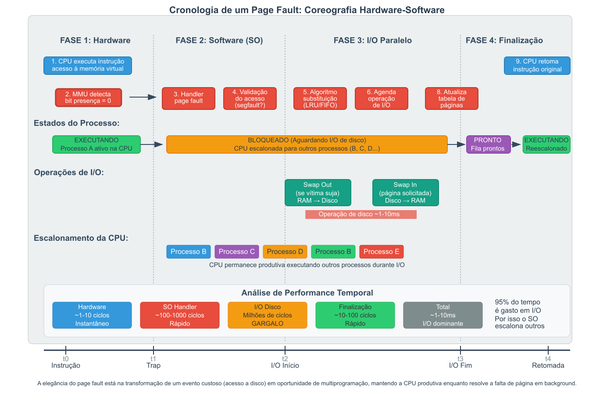

17 A Arquitetura da Ilusão: Um Mergulho Profundo no Gerenciamento de Memória Virtual
O gerenciamento de memória é uma das funções mais críticas de um Sistema Operacional moderno, garantindo que múltiplos processos possam coexistir e executar de forma eficiente e segura. No cerne deste gerenciamento está o conceito de memória virtual, uma abstração elegante que resolve uma série de problemas históricos e fundamentais da computação. Para compreender como a memória virtual é implementada nos sistemas modernos, precisamos entender por que ela é indispensável.
17.1 A Tirania da Memória Física
Nos primórdios da computação, os programas interagiam diretamente com a memória física, as diversas formas de memória volátil que discutimos antes no capítulo Chapter 16. Este modelo simples, impunha severas limitações.
Um programa, com todo o seu código e dados, precisava ser carregado integralmente na memória para poder ser executado. Se a memória física não fosse suficiente para conter o programa, ele simplesmente não poderia ser executado. Quando chegamos aos ambientes multitarefa, a situação se mostrou ainda mais complexa. Múltiplos programas competiam pelo recurso finito da memória volátil, e o Sistema Operacional era forçado a alocar blocos contíguos de memória para cada um dos processos em execução. Essa necessidade de alocação continua criava problemas de fragmentação, pequenos blocos de memória livre ficavam espalhados, inutilizáveis para processos maiores. A fragmentação ocorria devido a alocações e liberações dinâmicas de memória, levando a um cenário onde, apesar de haver memória total suficiente, não havia blocos contíguos grandes o bastante para satisfazer as solicitações dos processos.
Outro problema significante surgia da ausência de alguma forma de limitação de acesso. Como todos os processos estavam na mesma memória física não existia uma barreira entre os eles. Isso significava que um programa mal-comportado ou malicioso poderia facilmente ler ou escrever na memória de outro programa, ou até mesmo do próprio Sistema Operacional, levando a falhas catastróficas e exploração de vulnerabilidades de segurança.
Finalmente, o programador era sobrecarregado com a tarefa de gerenciar explicitamente a alocação e a liberação de memória, uma fonte notória de erros complexos, como vazamentos de memória e referências inválidas.
Os sistemas eram frágeis, ineficientes e complexos de programar.
Embora pouco versátil, o uso da memória física direta ainda é encontrado em sistemas embarcados e em situações nas quais o desempenho é crítico e a complexidade da memória virtual não é justificada. Nestes casos, o programador deve lidar diretamente com as limitações e desafios da memória física, incluindo a necessidade de garantir que o código e os dados caibam na memória disponível e que não haja conflitos, ou violações, entre processos.
17.2 A Grande Abstração: Endereços Virtuais vs. Físicos
A memória virtual surgiu como a solução para a tirania da memória física com uma ideia relativamente simples, mas poderosa.
A memória virtual foi concebida e implementada pioneiramente por Tom Kilburn e sua equipe na Universidade de Manchester entre 1957 e 1962. O trabalho, originalmente chamado de one-level storage (armazenamento de um nível), foi implementado no computador Atlas, e introduziu inovações como a tradução automática de endereços por meio de 32 Page Address Registers, PARs, e um dos primeiros algoritmos de aprendizado para substituição de páginas em memória conforme a necessidade. A primeira descrição pública completa da tecnologia foi feita por John Fotheringham em um artigo acadêmico de 1961, documento que se tornou a base para futuros desenvolvimentos na área.
Após a inovação de Manchester, a tecnologia foi desenvolvida de forma independente, e comercializada por outros pioneiros. Robert S. Barton, da Burroughs Corporation, lançou o B5000 em 1964, o primeiro sistema comercial a utilizar memória virtual, embora com uma abordagem baseada em segmentação. Pouco depois, o projeto Multics do MIT, liderado por Fernando J. Corbató, expandiu significativamente o conceito ao desenvolver o primeiro sistema que combinava segmentação e paginação, além de introduzir os Translation Look-aside Buffers, TLBs.
Essa colaboração internacional entre a academia e a indústria consolidou a memória virtual como um pilar dos sistemas operacionais modernos. Tanto na origem histórica quanto hoje a ideia central é desacoplar a visão que o programa tem da memória da realidade física do hardware. Uma boa metáfora para a esforçada leitora ter em mente para entender o conceito é a de um endereço comercial virtual: uma empresa pode usar um endereço de prestígio para correspondência, o endereço virtual, enquanto suas operações físicas reais ocorrem em um local completamente diferente e menos organizado, o endereço físico.
Em um sistema com memória virtual, cada processo opera dentro do seu próprio espaço de endereçamento virtual. Para o processo, este espaço de endereçamento é um vasto, linear e contíguo bloco de memória, começando no endereço \(0\) e estendendo-se até o limite máximo permitido pela arquitetura do processador (Ex.:, \(2^{32}\) bytes para sistemas de \(32 \text{bits}\) ou \(2^{64}\) para sistemas de \(64 \text{bits}\)). O processo pode ler, escrever e alocar memória dentro deste espaço privado como se fosse o único processo no sistema. Neste ponto a atenta leitora deve observar que as máquinas reais permitem um range de endereçamento muito menor, tipicamente \(2^{48} \approx 256 \text{terabytes}\), para as máquinas de \(64 \text{bits}\) devido a limitações físicas e de custo na implementação de memória.
O processo vê um enorme espaço de endereçamento, todo o espaço de endereçamento possível na arquitetura em que ele está rodando. Contudo, os endereços usados pelo processo são endereços virtuais, ou lógicos. Estes endereços virtuais não correspondem diretamente a uma localização na memória. Neste modelo, a memória física real é um recurso compartilhado, gerenciado exclusivamente pelo Sistema Operacional. Os endereços que correspondem às localizações físicas reais na memória são chamados de endereços físicos.
A mágica acontece na tradução: um componente de hardware, a Unidade de Gerenciamento de Memória, do inglês Memory Management Unity, MMU, em colaboração com o Sistema Operacional, traduz cada endereço virtual gerado pelo programa em um endereço físico correspondente em tempo real. Isso significa que o código de um programa, que no espaço virtual pode estar na localização \(50_{10}\), pode estar fisicamente alocado em múltiplos locais diferentes para processos distintos que o executam. Conceito que pode ser visto na Figure 17.1. Além disso, blocos de memória que são contíguos no espaço virtual podem estar espalhados de forma não contígua pela memória física sem que esta discontinuidade possa ser percebida pelo processo.

A atenta leitora deve lembrar que neste livro, chamaremos de memória física a memória volátil (RAM), eventualmente chamada de memória principal, atendendo um termo do livro do Tanenbaum. Também importamos o termo memória secundária (disco rígido, SSD) para representar um recurso separado e mais lento. Deste ponto em diante, quando falamos de memória física, ou memória principal, estamos nos referindo exclusivamente à memória volátil e a chamaremos de RAM.
17.3 Os Pilares da Memória Virtual
A abstração capaz de criar um espaço de endereçamento privado e linear para cada um dos processos em execução é a base para várias capacidades importantes dos sistemas operacionais modernos. Não se trata apenas de aumentar a RAM, mas de fornecer uma estrutura de gerenciamento fundamental. A persistente leitora deve considerar que existem 4 razões principais pelas quais a memória virtual é indispensável:
Execução de Programas Maiores que a
RAM: como o programa opera em um espaço virtual, nem todo o seu código e dados precisam estar na memória física simultaneamente. Isso quer dizer que o programa pode ter acesso a todo o espaço de endereçamento teórico de uma determinada arquitetura sem que exista toda essa memória física disponível. Usando as abstrações da memória virtual, o Sistema Operacional pode manter naRAMapenas as partes do programa que estão sendo ativamente usadas, que chamaremos de working set, enquanto o restante permanece em um espaço de armazenamento secundário, como um disco rígido ouSSD, conhecido como área de troca ou swap space. Quando o programa tenta acessar uma parte que não está naRAM, o Sistema Operacional a carrega do disco sob demanda. Isso permite que programas muito maiores que a memória física disponível sejam executados de forma transparente.Isolamento e Proteção de Processos: como cada processo possui seu próprio espaço de endereçamento virtual, ele é completamente isolado dos outros. Um processo não pode, por design, gerar um endereço que se traduza para a memória física alocada a outro processo ou ao
kernel. A MMU e o Sistema Operacional impõem essas barreiras no nível do hardware. Se um processo tentar acessar um endereço fora de seu espaço virtual legal, o hardware gerará uma falha de proteção, e o Sistema Operacional encerrará o processo, a famosa mensagem Segmentation Fault. Este isolamento é o pilar da estabilidade e segurança dos sistemas multitarefa.Gerenciamento de Memória Simplificado: a memória virtual libera os programadores da complexa tarefa de gerenciar a alocação de memória física. Eles podem escrever código assumindo um espaço de endereçamento contíguo limitado apenas pela arquitetura, sem se preocupar com a fragmentação da memória física ou com a localização real de seus dados em relação a outros processos. Funções como
mallocem C ounewem C++ permitirão a alocação de memória dentro deste espaço virtual, e o Sistema Operacional cuidará dos detalhes necessários para encontrar um local físico para ela.Compartilhamento Eficiente de Memória: a memória virtual facilita o compartilhamento de código e dados. Por exemplo, bibliotecas de sistema, como
libcno Linux ouDLLs no Windows são usadas por quase todos os programas. Para estas bibliotecas, em vez de carregar uma cópia separada da biblioteca na memória física para cada processo, o Sistema Operacional pode carregar uma única cópia física e mapeá-la para o espaço de endereçamento virtual de todos os processos que a utilizam. Cada processo vê a biblioteca em seu próprio espaço virtual, mas todos apontam para a mesma memória física, resultando em uma economia significativa deRAM.
Em suma, a memória virtual não é uma técnica para criar memória do nada, mas sim uma abstração de gerenciamento. A capacidade de usar o disco como uma extensão da RAM é o mecanismo que permite a essa abstração funcionar sob as demandas de memória e performance, mas as verdadeiras vitórias são o isolamento, a proteção, a simplificação da programação e o compartilhamento eficiente, que são os fundamentos da computação multitarefa moderna.
17.4 A Arquitetura de Suporte: A MMU e as Tabelas de Páginas
Como a atenta leitora deve lembrar, a implementação da abstração da memória virtual não é puramente software. Esta abstração depende da colaboração íntima entre o hardware do processador e o Sistema Operacional. O hardware fornece os mecanismos para tradução rápida de endereços e imposição de proteção, enquanto o software gerencia as políticas e as estruturas de dados que guiam esse hardware. Tudo começa com a Unidade de Gerenciamento de Memória ( MMU** )**.
17.4.1 O Tradutor de Hardware: A Unidade de Gerenciamento de Memória ( MMU )
A peça central do hardware é a Unidade de Gerenciamento de Memória ( MMU** ). A MMU** é um componente, geralmente integrado ao chip da CPU, posicionado entre o núcleo do processador e o sistema de memória. Sua função primária é traduzir, em tempo real, cada endereço virtual gerado pela CPU em um endereço físico correspondente antes que o acesso à memória seja de fato realizado. A CPU opera inteiramente no domínio dos endereços virtuais; ela nunca vê os endereços físicos reais. Cada vez que uma instrução tenta ler ou escrever na memória, o endereço que ela gera é interceptado pela MMU, que realiza a tradução. Sem a MMU, a tradução de endereços teria que ser feita em software, o que seria ordens de magnitude mais lento e tornaria a memória virtual impraticável para uso geral.
17.4.2 Paginação: Dividir para Conquistar
Para gerenciar a tradução de forma eficiente, os sistemas modernos utilizam uma técnica chamada paginação. Aqui a técnica consiste em dividir tanto o espaço de endereçamento virtual quanto a memória física em blocos de tamanho fixo:
- Um bloco no espaço de endereçamento virtual é chamado de página (page);
- Um bloco na memória física é chamado de quadro (frame).
Páginas e quadros têm sempre o mesmo tamanho, tipicamente \(4 \text{KB}\). Com a paginação, a tarefa de tradução de endereço é simplificada: em vez de traduzir cada byte individualmente, a MMU precisa apenas descobrir em qual quadro físico uma determinada página virtual está localizada. Para que isso seja possível, um endereço virtual é interpretado pela MMU como sendo composto por duas partes:
- Número da Página Virtual (VPN - Virtual Page Number): os bits mais significativos do endereço, que identificam qual página virtual está sendo acessada;
- Deslocamento (Offset): os bits menos significativos do endereço, que indicam a posição do byte dentro dessa página.
Por exemplo, em um sistema com páginas de \(4 \text{KB}\) (\(2^{12}\) bytes), os \(12\) bits menos significativos de um endereço virtual formam o offset, e os bits restantes formam o Virtual Page Number, ou número da página virtual. O processo de tradução consiste em mapear o número da página virtual para um Número de Quadro Físico, do inglês Physical Frame Number, PFN. O offset permanece inalterado, pois a posição relativa de um byte dentro de sua página é a mesma que sua posição relativa dentro de seu quadro. O endereço físico é então construído combinando o PFN, os bits mais significativos, com o offset original, os bits menos significativos.
Para consolidar o entendimento, a esforçada leitora deve considerar um exemplo concreto de tradução em um sistema x86 com páginas de \(4 \text{KB}\). Suponha que um programa acesse o endereço virtual \(0x87654321_{16}\).
Decomposição do endereço:
- Endereço virtual: \(0x87654321_{16}\) = \(10000111011001010100001100100001_2\);
- VPN (bits 31-12): \(100001110110010101000_2\) = \(0x87654_{16}\) = \(554580_{10}\);
- Offset (bits 11-0): \(001100100001_2\) = \(0x321_{16}\) = \(801_{10}\).
Processo de tradução pela MMU:
- A MMU extrai o VPN = \(554580_{10}\)
- Consulta a tabela de páginas na entrada \(554580_{10}\)
- Encontra PFN = \(1234_{10}\) (exemplo) na PTE correspondente
- Constrói o endereço físico: \((1234 × 4096) + 801 = 5054465_{10} = 0x4D2321_{16}\)
Verificação: O offset permanece inalterado (\(0x321_{16}\)), confirmando que a posição relativa dentro da página é preservada. A página virtual \(554580_{10}\) foi mapeada para o quadro físico \(1234_{10}\), e o byte específico está na posição \(801_{10}\) dentro desse quadro.
Este processo está ilustrado na Figure 17.2.

17.4.3 A Estrutura de Dados Central: A Tabela de Páginas (Page Table)
A questão fundamental é: como a MMU sabe qual número de quadro físico corresponde a um determinado número de página virtual? A resposta está na tabela de páginas (page table). A tabela de páginas é uma estrutura de dados, mantida pelo Sistema Operacional, que armazena o mapeamento entre as páginas virtuais de um processo e os quadros físicos na RAM.
A tabela de páginas está armazenada na Memória RAM no Kernel Space. Esta estrutura de dados é criada e gerenciada pelo kernel do Sistema Operacional e é considerada parte dos dados internos do kernel. Por razões de segurança, o espaço de memória do usuário, user space, não pode acessá-la ou modificá-la diretamente. Qualquer alteração, como alocar mais memória para um processo, deve ser feita através de chamadas de sistema, system calls que solicitam ao kernel que execute a operação.
Cada processo em execução tem sua própria tabela de páginas. A tabela de páginas é, essencialmente, um array no qual o índice é o Número da Página Virtual, VPN. Cada entrada nesse array, chamada de Entrada da Tabela de Páginas (PTE - Page Table Entry), contém o Número do Quadro Físico correspondente e um conjunto de bits de controle.
Para que a MMU possa usar essa tabela, a CPU possui um registrador especial, por exemplo, o registrador CR3 na arquitetura x86-64, que armazena o endereço físico da base da tabela de páginas do processo atualmente em execução. Quando o Sistema Operacional realiza uma troca de contexto, passando a execução de um processo para outro, uma de suas tarefas é atualizar este registrador para que ele aponte para a tabela de páginas do novo processo. Dessa forma, a MMU sempre sabe onde encontrar o mapa de memória correto para o processo ativo.
17.4.4 Anatomia de um Registro da Tabela de Páginas (PTE)
Um registro na tabela de páginas é muito mais do que apenas um ponteiro para um quadro físico. O registro na tabela de páginas é um canal de comunicação rico em informações entre o Sistema Operacional e a MMU. Os bits de controle dentro de um registro na tabela de páginas permitem uma gestão fina e dinâmica da memória que pode ser vista na Figure 17.3.

Embora os detalhes exatos variem entre as arquiteturas, os bits mais comuns incluem:
Número do Quadro Físico (Frame Number): o Número de Quadro Físico, ou PFN, é o número que indica onde a página está localizada na memória física. Quando o bit PS está em \(0\), o campo de endereço da tabela de páginas representa o endereço físico da tabela de páginas que gerencia os quatro megabytes naquele ponto. É fundamental que este endereço esteja alinhado em 4 KiB, pois os últimos 12 bits do valor de 32 bits são sobrescritos pelos bits de acesso. De forma similar, quando PS está em \(1\), o endereço deve estar alinhado em 4 MiB.
Bit de Presença/Validade (Present/Valid Bit - P): este é talvez o bit mais importante. Se ele estiver definido como \(1\), a página está atualmente na memória física, e o número de quadro físico que está no registro na tabela de páginas é válido. Se estiver definido como \(0\), a página não está na
RAM. Neste caso, ela pode estar em uma memória secundária ou ainda não ter sido alocada. Uma tentativa de acesso a uma página com o bit de presença em \(0\) faz com que a MMU gere uma interrupção especial chamada falta de página transferindo o controle para o Sistema Operacional, em inglês esta interrupção especial é chamada de page fault. Quando P não está definido, o processador ignora o resto da entrada e todos os 31 bits restantes podem ser usados para informações extras, como registrar onde a página foi parar no espaço de swap.Bits de Proteção (R/W e U/S): controlam as permissões de acesso à página. O bit R/W (Read/Write) define se a página é leitura/escrita (quando definido como \(1\)) ou somente leitura (quando \(0\)). O bit WP em CR0 determina se isso se aplica apenas ao espaço de usuário, sempre dando ao kernel acesso de escrita (o padrão), ou a ambos. O bit U/S (User/Supervisor) controla o acesso à página baseado no nível de privilégio: se definido como \(1\), a página pode ser acessada por todos; se \(0\), apenas o supervisor pode acessá-la. Para uma entrada de diretório de páginas, o bit de usuário controla o acesso a todas as páginas referenciadas por aquela entrada. Se um programa tentar realizar uma operação não permitida, a MMU gerará uma falha de proteção, que também é tratada pelo Sistema Operacional.
Bit de Modificação (Dirty - D): este bit é definido como \(1\) pelo hardware, a própria MMU, sempre que ocorre uma operação de escrita na página. O Sistema Operacional utiliza este bit como uma otimização: quando precisa remover uma página da memória para dar lugar a outra, ele verifica o bit de modificação. Se o bit for \(0\), a página não foi alterada desde que foi carregada do disco, e o Sistema Operacional pode simplesmente descartá-la. Se o bit for \(1\), a página está suja, o Sistema Operacional deve primeiro salvá-la de volta no disco para preservar as alterações.
Bit de Acesso (Accessed - A): este bit é definido como \(1\) pelo hardware durante a tradução de endereço virtual quando a página é lida ou escrita. O Sistema Operacional periodicamente zera este bit e o utiliza para implementar algoritmos de substituição de página. Páginas que foram acessadas recentemente, com o bit de acesso em \(1\), são consideradas parte do working set do programa e têm menos probabilidade de serem escolhidas para substituição. Note que este bit não será limpo pela CPU, então essa responsabilidade recai sobre o Sistema Operacional.
Bit de Tamanho de Página (Page Size - PS): armazena o tamanho da página para aquela entrada específica. Se o bit estiver definido, então a entrada do diretório de páginas mapeia para uma página de 4 MiB de tamanho. Caso contrário, mapeia para uma tabela de páginas de 4 KiB. Páginas de 4 MiB requerem que o PSE esteja habilitado. Com páginas de 4 MiB, os endereços físicos acima de 4 GiB só podem ser mapeados usando entradas de diretório de páginas de 4 MiB.
Bit Global (Global - G): instrui o processador a não invalidar a entrada TLB correspondente à página quando uma instrução MOV para CR3 é executada. O bit 7 (PGE) em CR4 deve estar definido para habilitar páginas globais.
Bits de cache:
- PCD (Page-level cache Disable): se definido, a página não será armazenada em cache. Caso contrário, será.
- PWT (Page-level Write-Through): controla as capacidades de Write-Through da página. Se o bit estiver definido, o cache write-through está habilitado. Se não, então write-back está habilitado.
- PAT (Page Attribute Table): se PAT for suportado, então PAT junto com PCD e PWT indicarão o tipo de cache de memória. Caso contrário, é reservado e deve ser definido como \(0\).
Bits Disponíveis para o Sistema Operacional: os bits 9 a 11 (se PS=\(0\), também os bits 6 e 8) não são usados pelo processador e estão livres para o Sistema Operacional armazenar suas próprias informações de contabilidade.
A Tabela (TLB-bitsresumo?) resume os bits mais comuns encontrados em uma entrada da tabela de páginas, destacando seu propósito, quem os define e quem os lê.
| Nome do Bit | Propósito | Quem Define (Típico) | Quem Lê (Típico) | Implicações |
|---|---|---|---|---|
| Presença/Validade (P) | Indica se a página está na memória física (RAM). |
Sistema Operacional | MMU | Se \(0\), a MMU gera um page fault. |
| Número do Quadro | Endereço do quadro físico onde a página reside. | Sistema Operacional | MMU | Usado para construir o endereço físico se o bit de presença for \(1\). |
| Proteção (R/W) | Define permissão de leitura/escrita. | Sistema Operacional | MMU | Uma violação de permissão gera uma falha de proteção. |
| Usuário/Supervisor (U/S) | Controla acesso baseado em privilégio. | Sistema Operacional | MMU | Se \(0\), apenas modo supervisor pode acessar. |
| Modificação/Suja (D) | Indica se a página foi modificada desde que foi carregada. | MMU | Sistema Operacional | Se \(1\), o Sistema Operacional deve salvar a página no disco antes de substituí-la. |
| Acesso/Referenciada (A) | Indica se a página foi acessada (lida ou escrita) recentemente. | MMU | Sistema Operacional | Usado pelo Sistema Operacional para implementar algoritmos de substituição de página. |
| Tamanho de Página (PS) | Define se é página de 4 KiB ou 4 MiB. | Sistema Operacional | MMU | Se \(1\), mapeia diretamente para página de 4 MiB sem tabela de páginas. |
| Global (G) | Previne invalidação de TLB em mudança de contexto. | Sistema Operacional | MMU | Requer bit PGE em CR4 habilitado. |
| cache Desabilitado (PCD) | Controla se a página pode ser armazenada em cache. | Sistema Operacional | MMU | Se \(1\), página não será colocada em cache. |
| Write-Through (PWT) | Define política de escrita do cache. | Sistema Operacional | MMU | Se \(1\), usa write-through; se \(0\), usa write-back. |
Como a atenta leitora deve ter percebido, a tabela de páginas não é uma estrutura estática, é um contrato dinâmico. O hardware informa o software sobre como a memória está sendo usada, definindo os bits de acesso e modificação, e o software instrui o hardware sobre como a memória deve ser gerenciada, definindo os bits de presença, proteção e políticas de cache. Ao alterar os bits de acesso ou modificação de \(1\) para \(0\) enquanto uma entrada está marcada como presente, é recomendado invalidar a página associada. Caso contrário, o processador pode não definir esses bits em leituras/escritas subsequentes devido ao cache de TLB. Essa comunicação contínua é a essência do gerenciamento de memória virtual.
17.5 O Fluxo de Tradução de Endereços em Detalhes
Com a MMU e as tabelas de páginas como base, podemos agora traçar o caminho completo de um acesso à memória, desde a geração de um endereço virtual pela CPU até a obtenção dos dados. Este processo tem diferentes caminhos, com implicações de desempenho drasticamente diferentes.
17.5.1 A Necessidade de Velocidade: O Translation Lookaside Buffer (TLB)
Uma análise inicial do processo de tradução revela um grande problema de desempenho. A tabela de páginas de cada processo reside na memória principal (RAM). Isso significa que, para cada acesso à memória solicitado por um programa, por exemplo, para buscar uma instrução ou um dado, a MMU precisará primeiro realizar um ou mais acessos à RAM para consultar a tabela de páginas e encontrar o número do quadro de página física (PFN) correto. Isso penaliza o tempo de acesso o tempo de acesso à memória de uma forma inaceitável.
Para resolver este gargalo, as CPUs modernas incluem um cache de hardware pequeno e extremamente rápido, dedicado a armazenar traduções de endereço recentes. Este cache é chamado de Translation Lookaside Buffer, TLB[^na1]. O TLB é uma memória associativa que armazena pares de (VPN, PFN) para as páginas acessadas mais recentemente. Ele explora o princípio da localidade de referência, o que significa que os programas tendem a acessar um conjunto relativamente pequeno de páginas com frequência.
O princípio da localidade de referência considera que se um programa acessa um endereço em uma página, é muito provável que ele acesse outros endereços na mesma página, o que chamamos de localidade espacial, ou acesse a mesma página novamente em breve, o que chamamos de localidade temporal. Ao manter as traduções para essas páginas quentes no Translation Lookaside Buffer, TLB, a MMU pode evitar a dispendiosa consulta à tabela de páginas na maioria das vezes. Não perca de vista, a tabela de páginas está na RAM, o TLB está no chip da CPU, e é muito, muito mais rápido.
O fluxo de tradução de endereço, portanto, sempre começa com uma consulta ao TLB como pode ser visto na Figure 17.4.

Para que a esforçada leitora compreenda completamente o processo, vamos detalhar os três cenários possíveis que podem ocorrer durante a tradução de um endereço virtual:
17.5.2 Cenário 1: Acerto no TLB (TLB Hit) - O Caminho Rápido
Este é o cenário ideal e, em um sistema bem comportado, o mais comum.
- A
CPUgera um endereço virtual para uma operação de leitura ou escrita; - A MMU recebe o endereço virtual e extrai o número da página virtual (VPN);
- A MMU apresenta o VPN ao TLB. O TLB realiza uma busca paralela (associativa) em todos os seus registros simultaneamente;
- O TLB encontra um registro correspondente ao VPN. Isso é um acerto no TLB** (TLB hit)**;
- O TLB retorna instantaneamente o número do quadro físico (PFN) associado, juntamente com os bits de proteção;
- A MMU verifica se a operação solicitada, leitura/escrita, é permitida pelos bits de proteção. Se for, a MMU constrói o endereço físico final combinando o PFN do TLB com o offset do endereço virtual original;
- O acesso à memória física prossegue. O dado é lido ou escrito na
RAMconforme solicitado pela instrução original.
Todo este processo é extremamente rápido, geralmente levando apenas um ou dois ciclos de clock da CPU. O custo da tradução de endereço é praticamente zero.
17.5.3 Cenário 2: Erro no TLB, Acerto na Tabela de Páginas (TLB Miss, Page Hit)
Este cenário ocorre quando o programa acessa uma página cuja tradução não está atualmente no TLB.
- Os passos \(1\) a \(3\) são idênticos ao cenário anterior, mas o TLB não encontra um registro correspondente ao VPN. Isso é um erro no TLB (TLB miss);
- Agora, a MMU deve recorrer ao plano B: consultar a tabela de páginas na memória principal. Em muitas arquiteturas, como x86, o hardware inicia um processo chamado page walk, caminhada na página;
- O hardware usa o endereço base da tabela de páginas, do registrador de controle CR3, e o VPN para calcular o endereço do registro na tabela de páginas, PTE, correta na
RAM; - A MMU realiza um acesso à memória
RAMpara ler a PTE, lento, muito lento; - A MMU inspeciona a PTE. Neste cenário, o bit de presença da PTE está definido como \(1\), indicando que a página está na memória. Isso é um acerto na tabela de páginas (page hit);
- A MMU extrai o número do frame físico, PFN, e os bits de proteção da PTE;
- A tradução recém-descoberta, VPN → PFN, é carregada no TLB. Se o TLB estiver cheio, um registro existente é substituído, geralmente usando uma política como Least Recently Used, LRU.
- A instrução original que causou o TLB miss é reiniciada. Desta vez, a tradução estará no TLB, resultando em um TLB hit (Cenário 1).
Este processo é significativamente mais lento que um TLB hit, podendo levar de \(10\) a \(100\) ciclos de clock, pois envolve um acesso à memória principal, que é muito mais lenta que o TLB.
O algoritmo Least Recently Used, LRU, é um dos algoritmos de substituição de cache mais comuns, utilizado para decidir qual entrada remover do TLB quando ele está cheio e uma nova tradução de endereço precisa ser armazenada.
O LRU funciona com uma regra simples: o registro de tradução (VPN → PFN) que foi acessado há mais tempo, o menos recentemente usado, é o escolhido para ser substituído pela nova entrada. O hardware precisa manter um registro, mesmo que aproximado, da ordem de acesso às entradas do TLB. Este algoritmo é interessante porque se baseia no princípio da localidade temporal, uma heurística fundamental em ciência da computação. A ideia é que as páginas de memória acessadas recentemente têm uma alta probabilidade de serem acessadas novamente em um futuro próximo.
Ao descartar a entrada que está inativa por mais tempo, o algoritmo LRU tenta manter no TLB as traduções que são mais relevantes para a execução atual do programa. Isso maximiza a chance de futuros acessos à memória resultarem em um TLB hit, evitando o custo de um page walk completo.
17.5.4 Cenário 3: Falta de Página (Page Fault)
Este é o cenário mais lento e complexo, ocorre quando a página necessária não está nem mesmo na memória física. Ele começa como um TLB miss, que vimos no Cenário 2, mas quando a MMU consulta a PTE na memória, ela encontra o bit de presença definido como \(0\). Neste ponto, o hardware não pode prosseguir. Ele para a execução da instrução atual e gera uma interrupção de hardware, transferindo o controle para o Sistema Operacional. Este evento é a falta de página (page fault), e seu tratamento detalhado é o tópico da próxima seção.
A viabilidade de todo o esquema de memória virtual depende criticamente da eficácia do TLB. A performance de um sistema é diretamente proporcional à sua taxa de acertos no TLB. Um TLB thrashing, onde o conjunto de trabalho de traduções de um processo é maior que o TLB, causa constantes TLB misses, degradando severamente o desempenho. A Figure 17.5 ilustra o fluxograma da tradução de endereços.

A tabela (TLB-virtual1?) resume os três cenários, destacando as ações do hardware, o envolvimento do Sistema Operacional e o custo relativo de desempenho:
| Cenário | Ações do Hardware | Envolvimento do Sistema Operacional | Custo Relativo de Performance |
|---|---|---|---|
| TLB Hit | Consulta ao TLB, tradução imediata. | Nenhum. | ≈ 1-2 ciclos de clock (muito rápido). |
| TLB Miss / Page Hit | Consulta ao TLB falha, realiza page walk na RAM, lê PTE, atualiza TLB. |
Nenhum. | ≈ 10-100 ciclos de clock (lento). |
| Page Fault | Consulta ao TLB falha, lê PTE, encontra bit de presença igual a \(0\), gera trap para o Sistema Operacional. | Total. O Sistema Operacional assume o controle para tratar a falha. | Milhões de ciclos de clock (extremamente lento). |
17.6 O Tratamento de Falhas de Página: Uma Coreografia entre Hardware e Software
Uma falta de página, page fault, não é um erro no sentido convencional. Pelo contrário, é um evento normal e necessário para o funcionamento da memória virtual, especificamente para a implementação da paginação por demanda, em inglês demand paging. Esta é uma estratégia de otimização na qual as páginas de um programa são carregadas do disco para a memória apenas quando são efetivamente acessadas pela primeira vez, em vez de todas de uma vez quando o programa inicia. A falta de página é o mecanismo que sinaliza ao Sistema Operacional: a página que o programa precisa não está na memória; por favor, carregue-a. O tratamento de uma page fault é uma sequência de passos cuidadosamente orquestrada entre o hardware e o software do Sistema Operacional.
17.6.1 O Gatilho: A Interrupção de Hardware
O processo começa quando a CPU tenta executar uma instrução que acessa um endereço virtual. Conforme descrito na seção anterior, a MMU tenta traduzir este endereço. Após um TLB miss, a MMU consulta a tabela de páginas na memória e encontra a PTE correspondente, mas descobre que o bit de presença está definido como \(0\). Neste momento, o hardware não pode completar a instrução. Ele realiza as seguintes ações:
- Interrompe a execução da instrução atual;
- Salva o estado da
CPU, incluindo o contador de programa, que aponta para a instrução que falhou, e os valores dos registradores, em uma área segura; - Gera uma exceção de hardware, uma trap, e transfere o controle para um rotina específica dentro do
kerneldo Sistema Operacional: o manipulador de faltas de página, page fault handler.
Resumo: Faults, Traps e Interrupções no x86-64
Três eventos distintos pausam a execução normal de um programa para dar controle ao Sistema Operacional, com propósitos e comportamentos diferentes.
Fault (ex.: Page Fault - Vetor 14): é uma exceção para tratar um erro corrigível. Ocorre quando uma instrução não pode ser completada.
- Gatilho: acesso a uma página de memória não presente na
RAMou com permissão inadequada; - Quando Ocorre: antes da conclusão da instrução problemática;
- Ação do Sistema Operacional: corrige o problema, ex.: carrega a página do disco para a
RAM; - Retorno: a execução volta para a mesma instrução, que agora pode ser executada com sucesso;
- Propósito: mecanismo fundamental para a gestão de memória virtual.
- Gatilho: acesso a uma página de memória não presente na
Trap (ex.: System Call): é uma exceção intencional para solicitar um serviço ao Sistema Operacional.
- Gatilho: execução de uma instrução específica, como
SYSCALL, para chamadas de sistema, ouINT 3, para breakpoints de depuração ou debug; - Quando Ocorre: depois da conclusão da instrução que a causou;
- Ação do Sistema Operacional: executa o serviço privilegiado solicitado, ex.: abrir um arquivo, alocar memória;
- Retorno: a execução continua na próxima instrução após a que gerou a trap;
- Propósito: é a ponte segura entre o código do usuário e o
kerneldo Sistema Operacional.
- Gatilho: execução de uma instrução específica, como
Interrupção de Hardware (ex.: NMI - Vetor 2): é um sinal assíncrono gerado por um dispositivo de hardware.
- Gatilho: evento externo ao processador, ex.: erro de paridade na
RAM, falha de barramento, timer. - Quando Ocorre: a qualquer momento, de forma independente do código em execução.
- Ação do Sistema Operacional: salva o contexto atual, trata o evento de hardware e depois retoma a tarefa que foi interrompida.
- NMI (Non-Maskable Interrupt): é um tipo especial de interrupção para erros de hardware críticos que não pode ser ignorada.
- Gatilho: evento externo ao processador, ex.: erro de paridade na
| Tipo | Retorno da Execução | Natureza |
|---|---|---|
| Fault | Reexecuta a mesma instrução | Erro corrigível |
| Trap | Executa a próxima instrução | Requisição intencional de serviço |
| NMI | Retoma a instrução interrompida | Evento assíncrono de hardware |
17.6.2 A Resposta do Sistema Operacional: O Handler de Falhas de Página
Uma vez que o controle é transferido para o kernel, o Sistema Operacional assume o comando e executa uma sequência complexa de operações para resolver a falta de página 20:
Preservação do Contexto e Verificação: o Sistema Operacional começa salvando o contexto completo do processo que causou a falha e verifica que a interrupção foi, de fato, uma falta de página;
Validação do Acesso: o Sistema Operacional examina o endereço virtual que causou a falha. Ele precisa determinar se o acesso era legal. Ele consulta suas próprias estruturas de dados para verificar se o endereço pertence a uma região válida do espaço de endereçamento do processo, ex.: código, dados, pilha. Se o endereço for inválido, fora dos limites permitidos, o acesso não foi legítimo. Neste caso, o Sistema Operacional não prossegue com o carregamento da página. Em vez disso, ele encerra o processo, tipicamente enviando um sinal de falha de segmentação ou segmentation fault em inglês. (
SIGSEGVno Unix/Linux ouSTATUS_ACCESS_VIOLATION).Localização da Página no Disco: se o acesso for válido, significa que a página existe, mas está no armazenamento secundário. O Sistema Operacional consulta uma tabela interna, que pode ser parte do mapa de memória do processo, para encontrar a localização exata da página no disco. A página pode estar na área de troca, swap space, se já esteve na memória e foi removida, ou pode estar no próprio arquivo executável do programa se esta for a primeira vez que é acessada.
Alocação de um Quadro Físico: O Sistema Operacional precisa de um quadro livre na memória física para carregar a página.
- Caso A: há um quadro livre. o Sistema Operacional simplesmente o aloca para este fim.
- Caso B: não há quadros livres. esta é a situação mais comum em um sistema sob carga. O Sistema Operacional deve selecionar um quadro para ser reutilizado. Para isso, ele executa um algoritmo de substituição de página. Algoritmos comuns incluem Least Recently Used, LRU, ou aproximações como o algoritmo do relógio, que usam o bit de acesso da PTE para decidir qual página é a melhor candidata a ser removida.
Tratamento da Página Vítima (se aplicável): se um quadro ocupado foi selecionado como vítima (no Caso B), o Sistema Operacional deve invalidar a PTE do processo proprietário dessa página. Além disso, ele verifica o bit de modificação, dirty bit, da página vítima. Se o bit estiver definido como \(1\), significa que a página foi alterada e suas modificações devem ser salvas. O Sistema Operacional agenda uma operação de escrita para copiar a página vítima de volta para sua localização no disco, swap out. Se o bit de modificação for \(0\), a cópia no disco já está atualizada, e o quadro pode ser reutilizado imediatamente.
Operação de E/S (Page-In): o Sistema Operacional agenda uma operação de leitura do disco para carregar a página necessária, localizada no Passo 3, para o quadro físico agora disponível, alocado no Passo 4. Esta operação de E/S de disco é, de longe, o passo mais demorado em todo o processo, levando milhões de ciclos de clock.
Escalonamento de Processos: como a leitura do disco é muito lenta, seria um desperdício imenso deixar a
CPUociosa. O Sistema Operacional, portanto, coloca o processo que causou a falha de página em um estado de bloqueado ou suspenso. Em seguida, o escalonador daCPUseleciona outro processo da fila de prontos para executar, garantindo que aCPUpermaneça produtiva.Conclusão da E/S e Atualização: quando o controlador de disco termina de carregar a página na memória, ele gera outra interrupção para notificar o Sistema Operacional. O manipulador desta interrupção realiza as seguintes tarefas:
- Atualiza a tabela de páginas do processo original. A PTE para a página recém-carregada é modificada: o bit de presença é definido como \(1\), e o campo do número do quadro é preenchido com o endereço do quadro onde a página foi carregada.
- Move o processo do estado bloqueado de volta para a fila de prontos. Agora ele está apto a competir pela
CPUnovamente.
Retomada da Execução: eventualmente, o escalonador selecionará o processo original para ser executado novamente. O Sistema Operacional restaura seu contexto salvo. Crucialmente, a execução não recomeça do início, mas sim da mesma instrução que causou a falha de página. Desta vez, quando a instrução for executada, a MMU encontrará uma PTE válida, após um TLB miss inicial, a tradução de endereço será bem-sucedida, e o programa continuará sua execução como se nada tivesse acontecido.
Este processo complexo ilustra como o mecanismo de falta de página transforma um problema de acesso a hardware, um endereço não mapeado, em um evento de E/S de disco gerenciado por software. Esta transformação é a essência da paginação por demanda, permitindo que o Sistema Operacional carregue dados de forma preguiçosa, em inglês dizemos lazy loading, melhorando drasticamente os tempos de inicialização de programas e a utilização geral da memória. A Figure 17.6 ilustra o fluxo de tratamento de uma falta de página.

As operações de entrada/saída representam o gargalo dominante no tratamento de faltas de página, com custos que variam drasticamente dependendo do meio de armazenamento e das características do sistema:
Latências por Meio de Armazenamento:
- HDD tradicional (7200 RPM): \(8\) a \(15ms\) por operação aleatória;
- SSD SATA: \(< 0.1ms\) por operação aleatória;
- NVMe SSD: \(< 0.1ms\) por operação aleatória;
- Optane/SCM: \(< 0.1ms\) por operação.
Decomposição do Tempo de Page Fault:
- Detecção e trap (hardware): \(~10\) a \(50\) nanossegundos (0.% do total);
- Handler do SO (software): \(~1\) a \(10\) microssegundos (0.% do total);
- Operação de I/O de disco: \(20\) microssegundos a \(15\) milissegundos (99%+ do total);
- Atualização de estruturas: \(~100\) a \(500\) nanossegundos (0.% do total).
Custos Relativos por Contexto:
- Página limpa (clean): apenas swap-in necessário, \(1\) operação de I/O;
- Página suja (dirty): swap-out + swap-in necessários, \(2\) operações de I/O;
- Sem quadros livres: Potencial cascata de substituições em sistemas sob alta demanda.
Estratégias de Otimização: o Sistema Operacional emprega diversas técnicas para amortizar esses custos: clustering de operações de I/O, lendo múltiplas páginas contíguas, write-behind assíncrono para páginas sujas, e prefetching preditivo baseado em padrões de acesso. Em sistemas modernos com SSDs, a diferença entre swap-out e descarte simples diminui significativamente, alterando as heurísticas tradicionais de substituição de página.